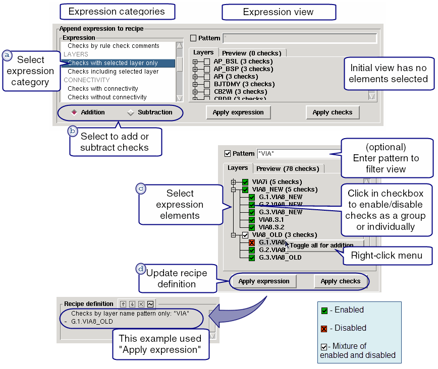
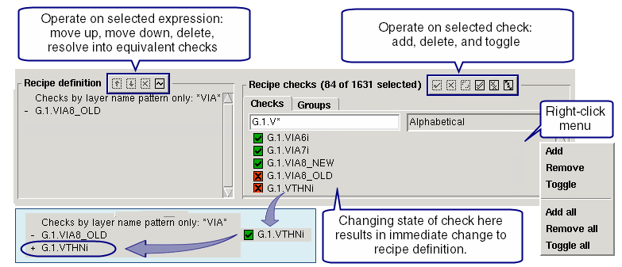

The
advanced editing controls in the Recipe Editor allow you to select
checks by layer, select checks which did or did not produce results,
and select and unselect individual rule checks. Unselecting individual
checks is useful if a particular check gives false errors when run
on a limited area.
Procedure
- Open a
recipe for editing and make selections using the basic editing controls,
as described in “Basic Editing of Check Selection Recipes”.
- If needed, click the Advanced button to expand the advanced
editing controls. See Figure 2 in “Calibre RealTime Recipe Editor Dialog Box” for a
view of the dialog box.
- View the
check selection recipe in the Recipe definition area. If desired,
remove expressions with the
 button,
or use the other selections in the button bar to operate on the
recipe expressions.
button,
or use the other selections in the button bar to operate on the
recipe expressions.
- Do the following to add an
expression to the recipe definition:
- Select
an expression category in the Expression area. The expressions categories
are defined in “Calibre RealTime Recipe Editor Dialog Box”.
- Specify “Addition” or “Subtraction”
below the Expression area to indicate whether you want to include
or exclude the checks in the expression. Included checks are indicated
with a and
excluded checks are indicated with a .
- In the expression view area
on the right, select items that you want to be part of the expression.
The view in this area depends on the expression category. You can
use the following methods to select checks:
Click the checkbox next
to the check (or layer name if selecting by layer).
Right-click for selection
menu. Note: In the Layers tab,
you must right-click a selection to open the menu. In addition,
there is only one menu selection available for the Layers tab, unlike the other expression
views.
If the Pattern option
is available, specify a wildcard pattern.
Some expression categories
have a separate Preview tab
which displays the checks that are selected by the expression.
- Click Apply
expression or Apply checks to
update the check recipe definition.
The following
figure shows Steps 4.a-4.d for the “Checks with selected layer only” expression, which selects
checks by layer.
Figure 1. Advanced Recipe Editor Controls
- Repeat Step 4 as necessary to add more expressions to the check recipe definition.
- View the check recipe in the
Recipe definition area. You can use the
 buttons
to move an expression up or down in the list, remove an expression,
or resolve an expression into the equivalent list of rule checks.
buttons
to move an expression up or down in the list, remove an expression,
or resolve an expression into the equivalent list of rule checks.Tip If you want to only run checks
that are selected in the rule file when using a custom check recipe,
go to the Expression area, select “Checks not selected in the rules
file,” enable “Subtraction,” and click the Apply
expression button. Make sure the expression “- Checks
not selected in the rules file” is the last expression in the recipe
definition.
- View the list of included
and excluded checks in the “Recipe checks” area. A Groups tab is included if check groups
are created in the rule file (the Group statement).
A green check mark indicates
that the rule check or group is included in the recipe. A red X
indicates the item is not included. Click the checkbox next to an
item to include or exclude it from the recipe.
In the Checks tab
you can right-click for a menu to add and subtract checks. You can also
enter a filter pattern to filter the rule checks that are shown
in the Checks tab.
Figure 2. Recipe
Definition Controls
- (Optional)
Click Export to save the check
recipe to a file. The recipe file can be imported by other users
with the Import button.
- Click OK to
save the recipe and exit the dialog box.